Code
set.seed (12768)
norm.data<-rnorm(n = 2000, mean = 100, sd = 20)
hist(norm.data, main = "Normal distribution")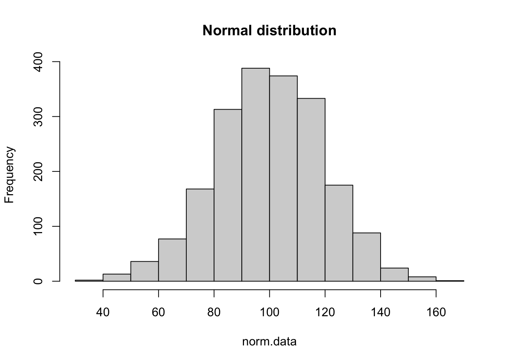
De dataset vi jobbat med hittils har haft responsvariablar som varit normalfördelade, och om vi gjort ett histogram över dem har de sett ut mer eller mindre på följande sätt:
set.seed (12768)
norm.data<-rnorm(n = 2000, mean = 100, sd = 20)
hist(norm.data, main = "Normal distribution")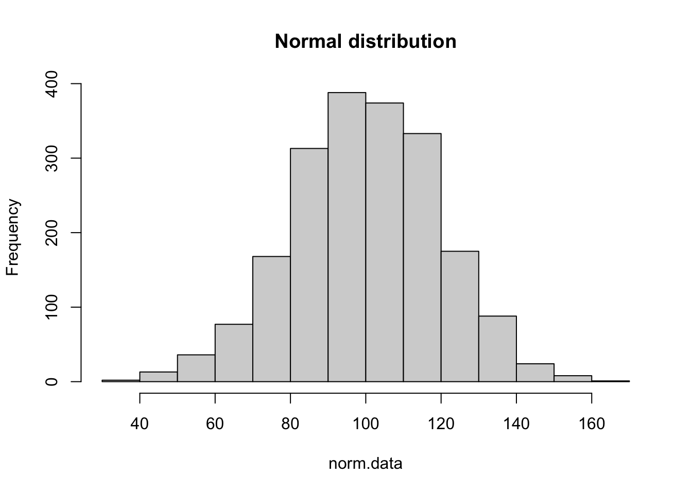
Ett histogram visar frekvensfördelningen av dina data i en vald variabel. Data delas in i intervall, och höjden på staplarna visar hur många datavärden som ligger inom det intervallet. Som vi ser i exemplet så ligger de flesta data mellan 75 och 125, medan mindre eller större värden blir succesivt ovanligare.
Om data är normalfördelade följer deras histogram ungefär den formen som visas i figuren, men ju mindre datamängd man har desto kantigare och ojämnare blir givetvis histogrammet.
De test vi hittills arbetat med kallas parametriska test, de arbetar utifrån att vissa parametrar kan skattas ur datat, såsom medelvärde och varians. För att säkert kunna skatta sådana parametrar krävs dock att datat uppfyller vissa krav, ofta stt det är normalfördelat.
Om datat inte är normalfördelat betyder det dock inte att man inte kan använda parametriska test. Ofta kan man förändra (transformera) datat så att det antar en normalfördelning, genom något som kallas transformationer.
Vi kommer att titta på två vanliga transformationer:
En vanlig typ av transformering är kvadratrots-transformering, vilket man kan överväga i följande fall
Data är höger-skevt (se beskrivning nedan). Vid extremt höger-skevt data kan man överväga log-transformering
Man har räknedata med ett medelvärde mindre än ca 20
Variansen ökar med medelvärdet (vanligt om man har räknedata)
En vanlig typ av data är räknedata (count data), vi kan ha räknat antalet individer, antalet frön eller avkommor. Det är en datatyp som enbart innehåller heltal, och som inte kan vara negativ (man säger att den följer en poisson-fördelning och inte en normalfördelning). Om man har ett lågt medelvärde (lägre än 20) så kommer man få en skev fördelning (se exemplet nedan). Vi simulerar räknedata från en poisson-fördelning och gör ett histogram nedan. Vi ser att variationen är störe för höga än för låga värden (vi säger att förelningen är höger-skev, eller right-skewed).
set.seed (12768)
poisson.data<-rpois(n = 2000, lambda = 4)
hist(poisson.data, col = "red",main = "Histogram of Poisson data with mean of 4")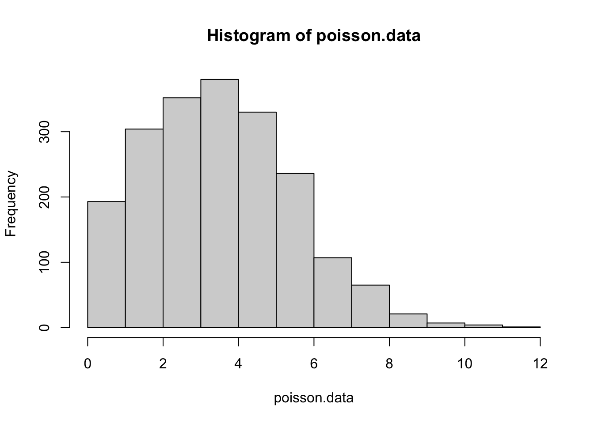
Eftersom våra statistiska test förutsätter att antingen data eller residualerna är normalfördelade kommer testen att få problem med den här typen av data. Vi kommer att få p-värden, men vi kan inte lita på dem eftersom förutsättningarna för modellen inte uppfylls. Som tur är kan vi uppfylla kraven på normalfördelat data/residualer genom att transformera vår responsvariabel!
Den transformationen man använder sig av om man har räknadata med låga medelvärden och ett histogram som är höger-skevt är kvadratrots-transformering.
Transformeringen är enkel, vi drar kvadratroten ur alla tal i vår responsvariabel. Det gör att alla tal blir mindre, men ju större talet är desto större förminskning får det, och vi blir av med höger-skevheten. Vi kan illustrera det genom att se hur mycket ett visst tal minskar om vi drar roten ur det.
| Tal | Roten ur talet | Hur mycket minskar talet |
| 2 | 1.41 | 0.59 |
| 10 | 3.16 | 6.84 |
Som vi ser minskar stora tal mer än små tal, vilket gör att höger-skevheten minskar. Vi använder oss av funktionen sqrt() för att kvadratrots-transformera responsvariabeln. Låt oss se på ett histogram när vi transformerat vår data!
hist(sqrt(poisson.data),col = "red", main = "Histogram of poisson data after square root transformation")
Nu blev histogrammet mycket mer lik en normalfördelning. Det innebär att om vi kvadratrot-transformerar vår responsvariabel så kan vi använda våra vanliga statistiska tester (t-test, regression, anova etc) trots att vår data inte var normalfördelad innan transformeringen.
Observera att om vårt data redan är normalfördelat så förstör en kvadratrots-transformering den fördelningen. Vi skall alltså bara använda den om vi behöver det.
Problemet med höger-skevhet är vanligast om man har låga medelvärden. Är medelvärdet av räknetal högre än ca 20 antar fördelningen något som kan approximeras till en normalfördeln. Då behövs ingen transformering. Vi kan illustrera det nedan, nu har vi räknedata med ett medelvärde på 35.
set.seed (12768)
poisson.data.larger.mean<-rpois(n = 2000, lambda = 35)
hist(poisson.data.larger.mean, col = "red", main = "Histogram of Poisson data with mean of 35")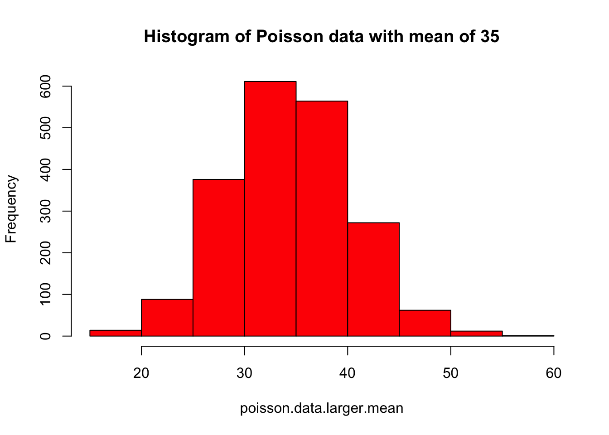
Som vi ser så är det knappt någon skevhet. Testa själv att sätta medelvärdet (kallas lambda) till 100 så ser det väldigt bra ut.
En annan vanlig typ av transformering är log-transformering, vilket man kan överväga i följande fall
Data är extremt höger-skevt (se plot nedan).
Data beskriver en multiplikativ eller exponentiell process, till exempel tillväxt eller ibland vikt
Variansen ökar kraftigt med medelvärdet
Vi börjar med att simulera data från en exponentiell fördelning och studerar histogrammet. Som du ser är datat kraftigt höger-skevt med några extrema värden som är mycket större än de övriga.
set.seed (12768)
exp.data<-rlnorm(n = 50, 3,1)
hist(exp.data, main="Histogram of exponential data",col="blue")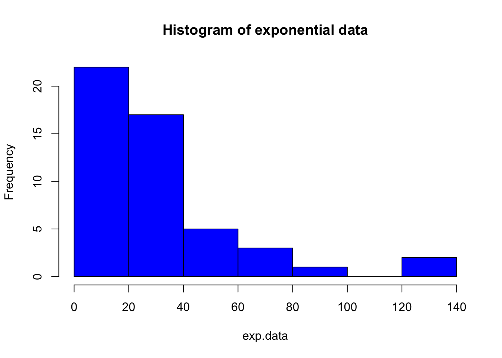
För att analysera den här typen av data och kunna lite på de p-värden vi får i vår analys behöver vi log-transformera vår responsvariabel. Vi gör det med funktionen log().
På samma sätt som kvadrat-rots-transformering så minskar log-transformeringen höga tal mer än låga tal, vilket ger en jämnare fördelning. Log-transformeringen är dock ännu kraftigare, vilket vi kan se i tabellen nedan.
| Tal | Logaritmen av talet | Hur mycket minskar talet |
|---|---|---|
| 2 | 0.69 | 1.31 |
| 10 | 2.30 | 7.70 |
Vi tittar på ett histogram när vi log-transformerat vår data.
hist(log(exp.data),col="blue", main="Histogram of exponential data after log transformation")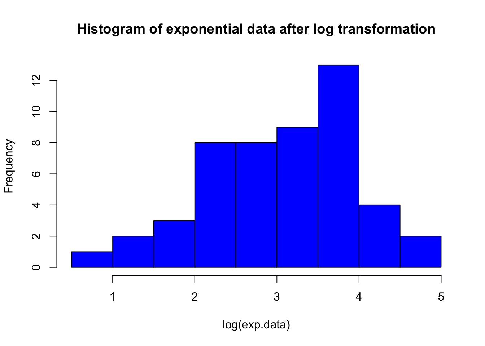
Som vi ser så gör log-transformeringen att vårt kraftigt höger-skeva data antar något som mer liknar en normalfördelning. Notera åter igen att vi inte skall log-transformera data som redan är normalfördelat, då förstör vi en bra fördelning.
Förutom att titta på histogram så är en mycket vanlig metod för att inspektera om data följer en normalfördelning att göra en QQ-Plot.
Nedan följer en QQ plot på normalfördelat data.
qqnorm(norm.data)
qqline(norm.data)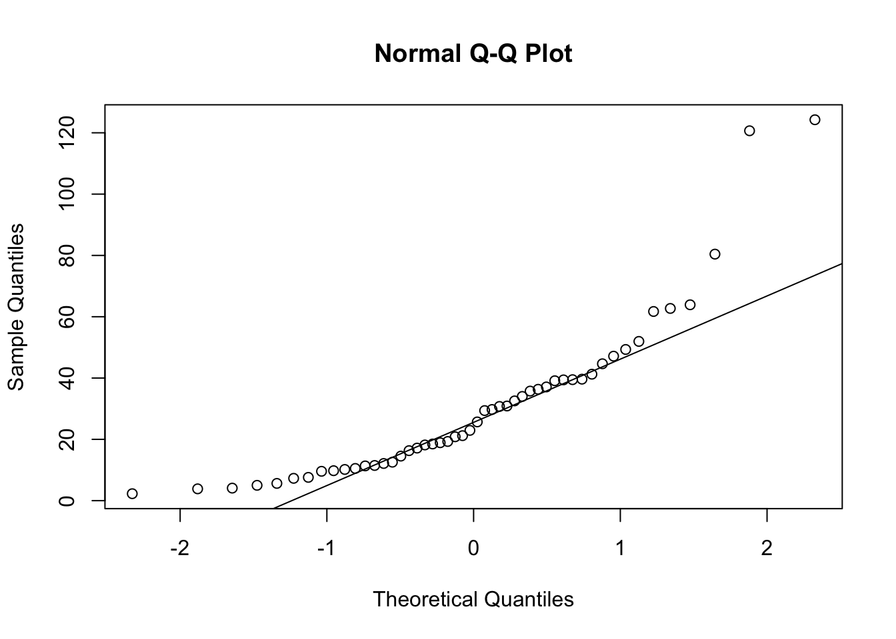
Vi ser att alla datapunkter faller mer eller mindre på den diagonala linjen, dvs våra mätvärden (på y-axeln) motsvarar nästan perfekt våra förväntade mätvärden om de skulle komma från en normalfördelning (x-axeln). Så här bra ser sällan en QQ plot ut, speciellt låga och höga värden brukar avvika lite, men vi vill inte se en systematisk avvikelse.
Låt oss titta på en QQ-plot för våra exponentiella data
qqnorm(exp.data,col="blue")
qqline(exp.data)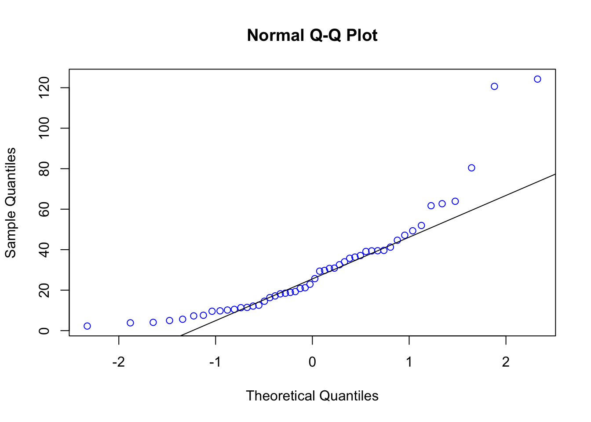
Även om man sällan ser att alla punkterna faller precis på linjen (speciellt punkterna i ändarna av fördelningen kan ofta ligga en liten bit från linjen) så skall vi inte se ett tydligt mönster så som vi ser här, och vi ser att framför allt de höga värderna avviker kraftigt från den förväntade fördelningen. Det här tyder på att datat inte är normalfördelat.
Vi testar det på log-transformerat data:
qqnorm(log(exp.data),col="blue")
qqline(log(exp.data))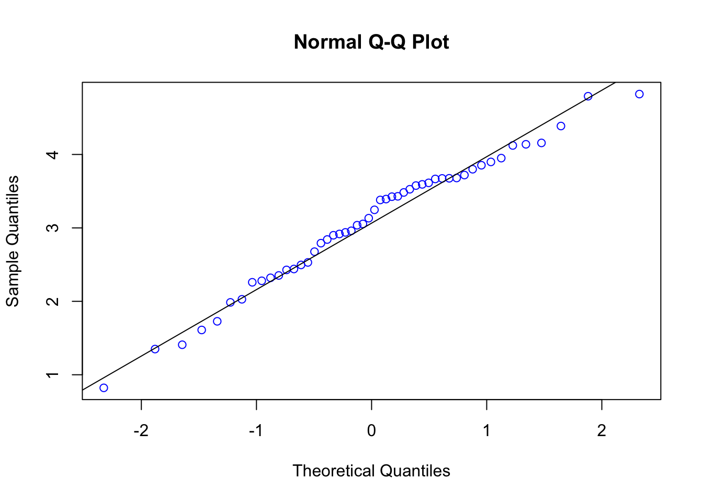
En viktig aspekt att minnas är att för regressioner och ANOVA så är det residualerna som skall vara normalfördelade. Man avgör det genom att titta på en QQplot på residualerna, det är den andra grafen man får fram när man kör plot(modellens.namn) efter en regression/ANOVA (se beskrivning under respektive tutorial, kapitlet om att utvärdera modellen). Ett exempel på en sådan graf ser vi nedan.
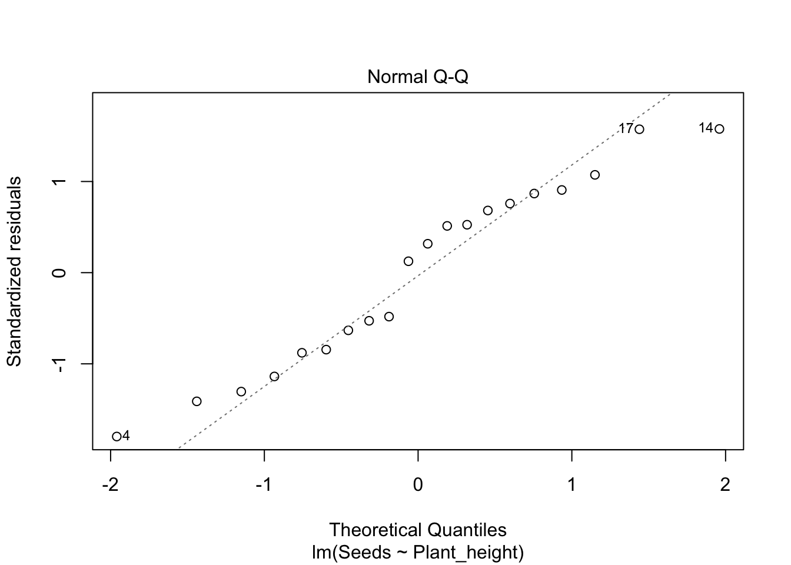
Jag rekommenderar inte att du testar för normalfördelning om du har stora dataset. Testen undersöker avvikelse från normalfördelning, och ju mer data du har, desto kraftfullare blir testen och kan upptäcka minimala avvikelser som inte spelar någon praktisk roll för de statistiska testen. Men om du ändå vill ha ett test så använd Shapiro Wilk’s test, i funktionen shapiro.test()
Först gör vi ett Shapiro test på vår exponentiella fördelning:
shapiro.test(exp.data)
Shapiro-Wilk normality test
data: exp.data
W = 0.82092, p-value = 2.756e-06Testet är signifikant, dvs data avviker signifikant från normalfördelning.
Om testet är icke-signifikant betyder det att data inte avviker från normalfördelning (dvs data är normalfördelat). Vi testar på vårt log-transformerade data:
shapiro.test(log(exp.data))
Shapiro-Wilk normality test
data: log(exp.data)
W = 0.97929, p-value = 0.5224Testet är inte signifikant, dvs data avviker inte från normalfördelning (dvs är normalfördelat) efter att vi transformerat det med log().
Om histogram och QQplot ser bra ut, men du ändå får en signifikant avvikelse från normalfördelning (speciellt vid större dataset) skulle jag lita på histogramen och QQ plot. Eftersom alla statistiska test blir kraftfullare ju mer data du har så kan Shapiro-Wilks test säga att data avviker från normalfördelning fast det i alla praktiska bemärkelser kan räknas som normalfördelat data.
Som ett exempel på problemen med test för normalfördelning så simulerar jag 2000 värden från en normalfördelning:
set.seed(62874)
simdata <- rnorm(mean = 100, sd = 50, n = 2000)Vi gör sedan ett histogram - det ser extremt normalfördelat ut!
hist(simdata)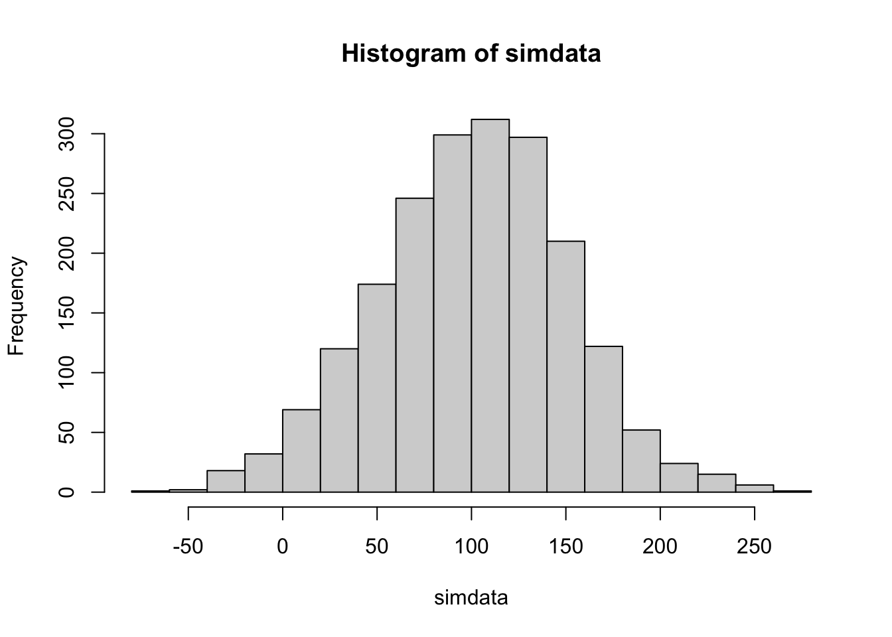
En QQ-plot ser även den väldigt bra ut, så här bra har jag nog aldrig sett en QQ plot som varit baserad på riktiga data.
qqnorm(simdata)
qqline(simdata)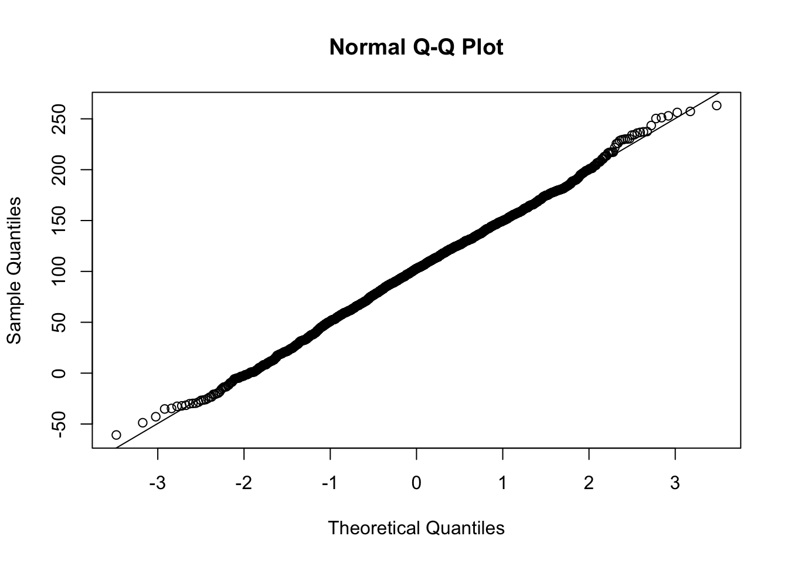
Men tack vare att vi har så många värden så tycker Shapiro Wilk’s test att våra data (som vi vet kommer från en normalfördelning) signifikant avviker från normalfördelningen.
shapiro.test(simdata)
Shapiro-Wilk normality test
data: simdata
W = 0.99833, p-value = 0.04167Därför skall du inte lita blint på Shapiro´s test, det är mycket bättre att titta på histogram och QQ plot.
Problemet är detsamma fast omvänt vid små dataset, då kan Shapiro Test säga att data inte avviker från normalfördelning fastän vi vet att det gör det, pga att testet är svagt vid lite data.
Hur gör man då rent praktiskt för att transponera sin responsvariabel? Det är mycket enkelt! Exemplet nedan använder kvadratrots-transformering, men om du hellre vill göra log-transformering ersätter du sqrt() med log().
Det enklaste är att transponera direkt i din analys. Istället för att skriva responsvariabel ~ ... så skriver du sqrt(responsvariablel) ~ ..., det vill säga du omsluter din responsvariabel med sqrt() i formeln för din statistiska analys. Sedan fortsätter du som vanligt med analysen.
Om du hellre vill ha en variabel i ditt dataset som är transformerad, så att du slipper tänka på att lägga till transformeringen i din modell så kan du enkelt skapa en sådan variabel. Du använder sedan din nya variabel som responsvariabel i dina statistiska modeller.
Om ditt dataset heter MyData och din responsvariabel heter Response, så kan du skapa en ny variabel i ditt dataset, vi kan kalla den sqrt.transformed.Response
MyData$sqrt.transformed.Response <- sqrt(MyData$Response)
Koden sqrt(MyData$Response) betyder att vi tar kvadratroten ur alla tal i variablen Response som ligger i datasetet MyData.
Koden MyData$sqrt.transformed.Response <-betyder att vi sparar resultatet i en variabel vi kallar sqrt.transformed.Response som vi lägger till i datat MyData
Vi testar på att transponera data i följande exempel. Du vill veta om blåmesarnas häckningsframgång skiljer sig mellan två olika skogar, och du har data på antal ungar som ett antal blåmeshonor får under ett år.
Ladda ner följande fil bluetit.txt (högerklicka, välj “spara länk som”) och spara filen på din hårddisk i en mapp med ett lämpligt namn.
bluetit_data <- read.table("data/bluetit.txt",
header=T,
sep="\t",
dec=",") Börja med att titta på datans struktur med str().
str(bluetit_data)'data.frame': 40 obs. of 2 variables:
$ Forest : chr "A" "A" "A" "A" ...
$ Offspring: int 8 7 7 5 10 10 10 12 3 9 ...head(bluetit_data) Forest Offspring
1 A 8
2 A 7
3 A 7
4 A 5
5 A 10
6 A 10Vi gör en enkel boxplot för att förstå vårt dataset
boxplot(Offspring ~ Forest,
data = bluetit_data)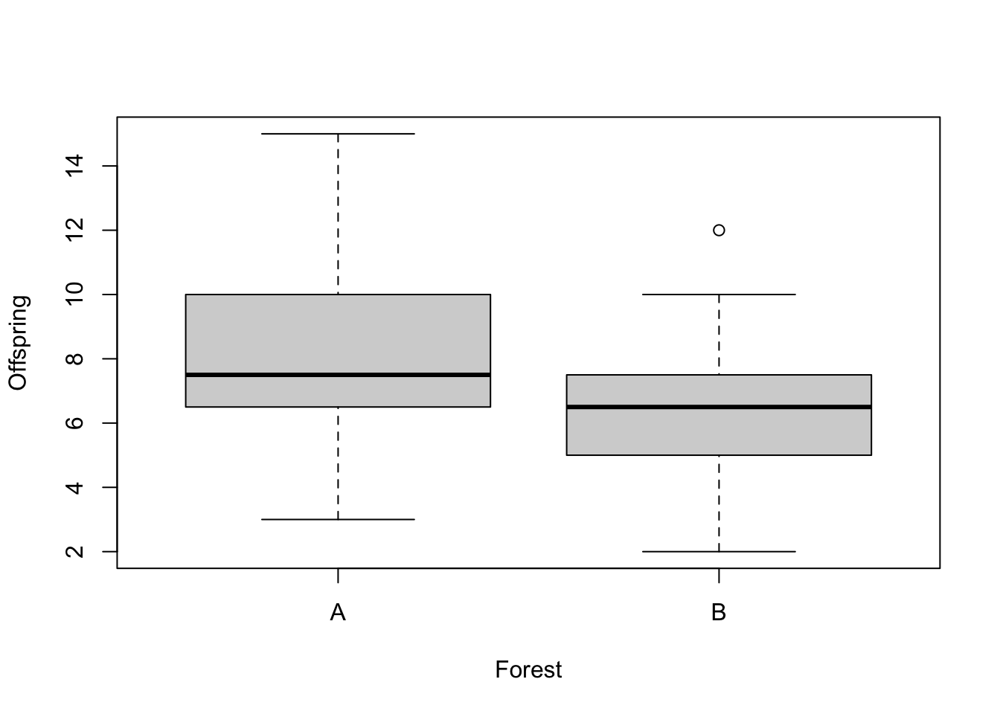
Det verkar kanske finnas fler avkommor i skog A än i skog B, men vi har låga medelvärden och räknedata, så vi kan misstänka att vi bör göra en kvadratrots-transformering av vår responsvariabel Offspring.
Hur ser vår responsvariabel ut? Vi gör ett histogram:
hist(bluetit_data $Offspring)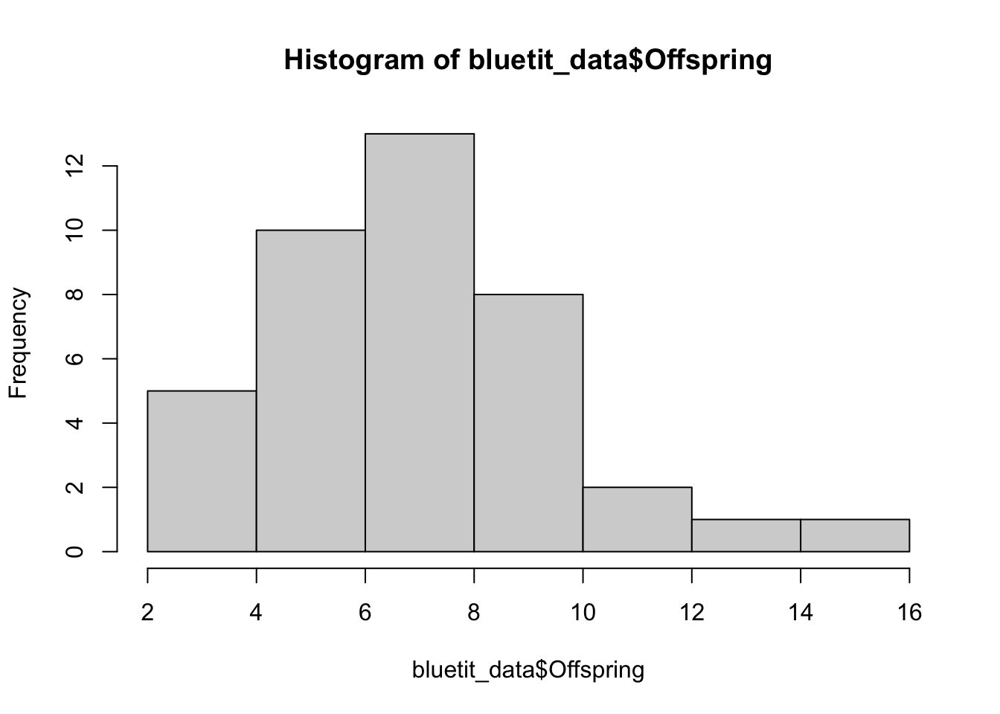
Vi ser att histogrammet är högerskevt, och eftersom vi har räknedata och medelvärdet är under 20 (vi ser i histogrammet att det är runt åtta) så misstänker vi att en kvadratrots-transformering behövs.
Vi kan även göra en QQplot
qqnorm(bluetit_data $Offspring)
qqline(bluetit_data $Offspring)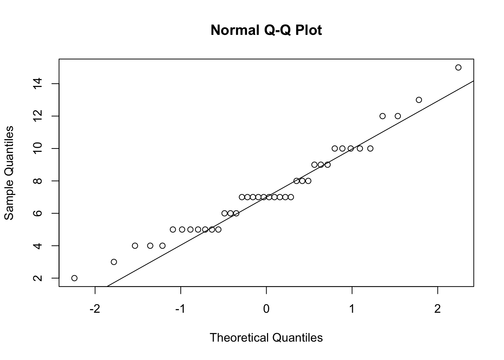
Vår QQ-plot ser inte så dålig ut, men vi ser en systematisk avvikelse vid låga och höga värden.
Vi kan nu antingen använda oss av metod 1 och transformera direkt i alla analyser, eller skapa en ny variabel med transformerat data. Jag visar här hur man gör med transformeringen direkt i varje analys, om du hellre vill göra en ny variabel med transformerat data går du längre ned till Ny variabel med transformerat data
Vi tittar på ett histogram med transponerat data, vi använder samma kod som tidigare men omsluter vår responsvariabel i funktionen sqrt()
hist(sqrt(bluetit_data $Offspring))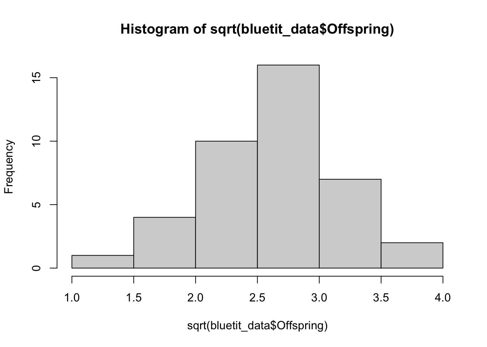
Det ser ju bättre ut!
Vi gör samma sak med vår QQplot
qqnorm(sqrt(bluetit_data $Offspring))
qqline(sqrt(bluetit_data $Offspring))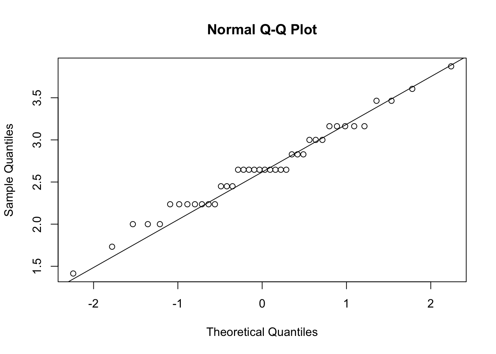
Återigen så verkar en kvadratrots-transformering vara ett bra val.
Vi gör nu vårt t-test, och omsluter vår responsvariabel med funktionen sqrt()
m.bluetit <- t.test (sqrt(Offspring) ~ Forest,
data = bluetit_data)
m.bluetit
Welch Two Sample t-test
data: sqrt(Offspring) by Forest
t = 2.1613, df = 37.551, p-value = 0.03712
alternative hypothesis: true difference in means between group A and group B is not equal to 0
95 percent confidence interval:
0.02131595 0.65560605
sample estimates:
mean in group A mean in group B
2.826934 2.488473 Blåmesen har fler avkommor i skog A än i skog B (t-test, t = 2.16, d.f. = 37.44, p = 0.037)
Ett alternativt sätt är att skapa en ny varianbel med transponerade data. Vi kallar den sqrt.trans.Offspring Det är viktigt att du ger den ett nytt namn och inte sparar över din gamla variabel med nytt innehåll.
bluetit_data$sqrt.trans.Offspring <- sqrt(bluetit_data$Offspring)Vi tittar på vårt dataset med str() och ser att vi har en ny variabel.
str(bluetit_data)'data.frame': 40 obs. of 3 variables:
$ Forest : chr "A" "A" "A" "A" ...
$ Offspring : int 8 7 7 5 10 10 10 12 3 9 ...
$ sqrt.trans.Offspring: num 2.83 2.65 2.65 2.24 3.16 ...Vi kan nu genomföra t-testet med den nya variabeln som vår responsvariabel
m.bluetit.2 <- t.test (sqrt.trans.Offspring ~ Forest,
data = bluetit_data)
m.bluetit.2
Welch Two Sample t-test
data: sqrt.trans.Offspring by Forest
t = 2.1613, df = 37.551, p-value = 0.03712
alternative hypothesis: true difference in means between group A and group B is not equal to 0
95 percent confidence interval:
0.02131595 0.65560605
sample estimates:
mean in group A mean in group B
2.826934 2.488473